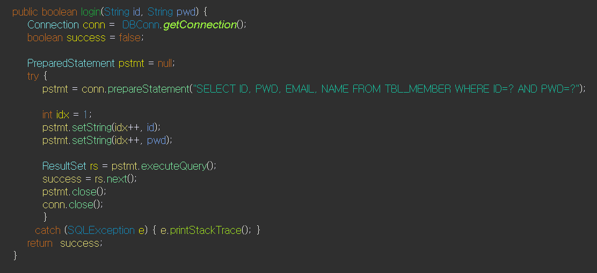
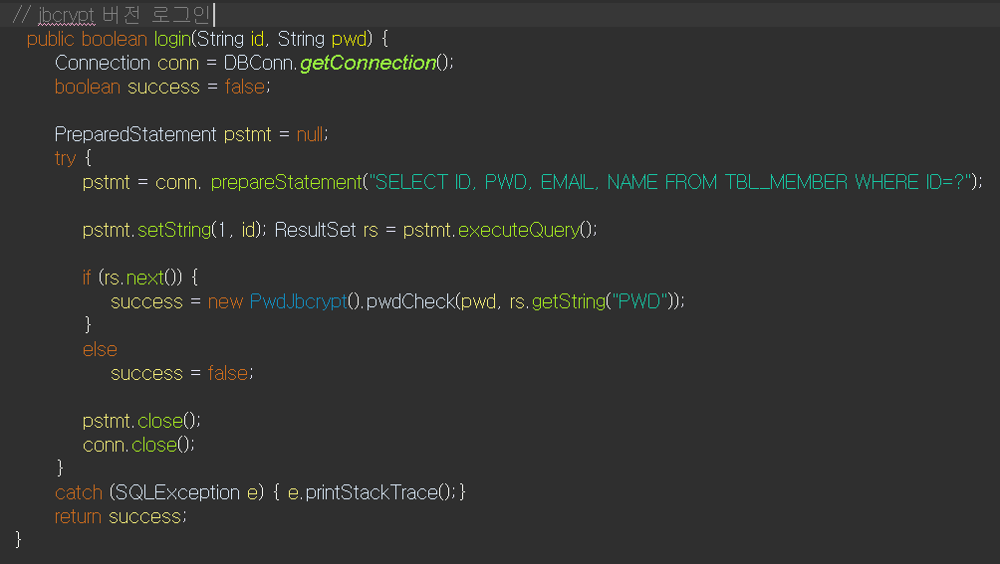
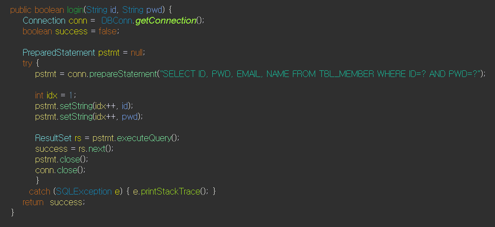
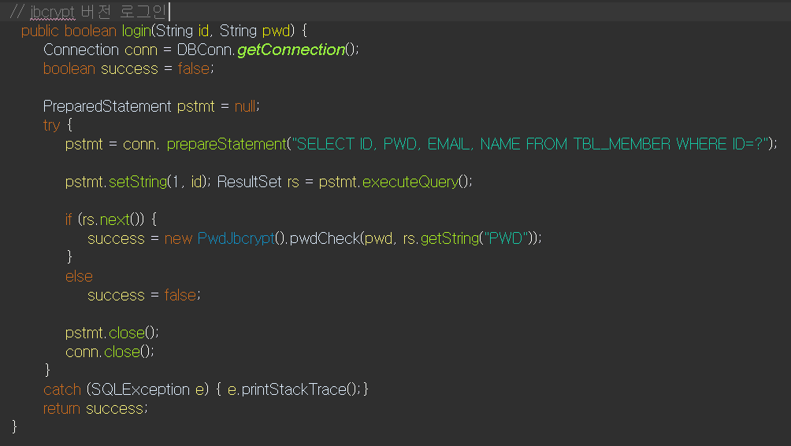

- 이름: 문현석
- 나이: 30 (1993.11.12)
- 휴대전화: 010-2652-8284
- E-mail: ifonlymun@gmail.com
- GitHub: https://github.com/ifonlyM
- 자바 팀프로젝트
- Servlet/JSP 개인프로젝트
- Servlet/JSP 프로젝트를 SPRING FRAME WORK로 전환
- SPRING FRAME WORK 팀프로젝트
- 포트폴리오 웹사이트 제작


JAVA로 제작한 음악플레이어 입니다.
프로그램은 지정된 폴더에 있는 MP3파일을 재생할수 있고, 간단한 회원가입 기능을 추가해
사용자마다 플레이리스트를 각자 관리할 수 있습니다.
음악을 재생하면서 프로그램 조작이 가능해야 했기에 멀티쓰레드를 활용했습니다.
팀원들과 협업을 통해 소통의 중요성과
팀장으로서 팀원들의 개발능력을 토대로 업무를 분배하고 프로젝트를 이끌어나가는 리더십의 중요성을 깨달았습니다.


회원제 기능구현을 위해 Oracle DBMS를 이용하여 회원 테이블을 생성했습니다.
회원가입중 데이터 입력시 각 데이터들에 대한 중복체크, 패턴체크기능을 구현했습니다.
로그인시 쿠키를 이용해 사용자 아이디를 기억하는 기능을 구현했습니다.
로그인 성공시 세션객체에 사용자 정보를 저장하고 로그아웃시 세션객체의 사용자 정보를 제거합니다.

 



DB에 저장되는 회원 비밀번호를 Bcrypt 라이브러리를 이용해 암호화 했습니다.
spring security를 접하고난뒤 jsp/servlet에도 보안관련 조치를 할 수 없을까 고민하다 Bcrypt를 알게되어 적용하게 되었습니다.
Bcrypt를 적용하기 전에는 DB상 회원비밀번호가 그대로 노출되었지만,
Bcrypt적용후 Bcrypt.hashpw() 메서드를 통해 암호화된 비밀번호가 DB에 저장됩니다.
로그인 시에는 사용자가 입력하는 비밀번호와 DB의 암호화된 비밀번호를 Bcrypt.checkpw() 메서드를 통해 비교후 로그인 하게 됩니다.


회원정보수정
비밀번호 변경, 메일 변경, 이름 변경이 가능하며 정보 변경을 위해서는 한번더 비밀번호 확인이 필요합니다.
정보 변경시에도 사용자가 입력한 데이터의 중복체크, 패턴체크가 적용됩니다.
ID/PWD 찾기
가입시 입력한 이메일을 이용해 각 정보를 찾을수 있습니다.
서버측에서 메일발송을 위해 SMTP를 이용했습니다
메일로 발송되는 인증코드는 uuid.random() 메서드를 통해 얻을수 있는 임의의 난수를 이용했습니다.
회원정보수정과 ID/PWD찾기 기능 모두 Bcrypt를 이용한 비밀번호 암호화를 적용시켰습니다.


게시글 기능 구현을 위해 DB에 게시글 테이블을 생성했습니다.
게시글 목록 조회
게시판 페이지를 요청하게 되면 해당 카테고리에 맞는 게시글들을 페이지네이션을 거쳐
사용자의 웹 페이지에 게시글 목록 형태로 출력하게 됩니다.
게시글 상세 조회
게시글 목록중 하나의 게시글을 클릭하여 게시글 세부내용을 요청할시
게시글의 BNO값을 이용해 해당하는 게시글 상세 페이지로 이동합니다.
게시글 작성
게시글을 작성하면 DB테이블에 글 번호, 제목, 내용, 작성날짜, 아이디, 게시판 카테고리 데이터를 저장(INSERT)하게 됩니다.
글 번호(BNO)는 시퀀스를 통해 발급받습니다.
파일첨부 기능을 구현했습니다.


게시글 수정
현재 조회중인 글의 작성자인 경우에만 수정버튼이 보이게 됩니다.
수정한 글 제목,내용은 DB에서 UPDATE를 통해 처리됩니다.
아쉽지만 첨부파일의 수정처리는 구현하지 못했습니다.
게시글 삭제
현재 조회중인 글의 작성자인 경우에만 삭제버튼이 보이게 됩니다.
사용자가 삭제 요청시 서버는 DB에서 해당글을 DELETE처리 하여 삭제합니다.
관계된 댓글, 첨부파일 또한 모두 삭제 됩니다


댓글 기능 구현을 위해 DB에 댓글 테이블을 생성하였습니다.
Ajax를 활용한 비동기처리로 댓글 기능을 구현했습니다.
댓글 조회
게시글 상제 조회하면 해당 게시글에 작성된 댓글또한 조회가 가능합니다.
게시글의 BNO값과 같은 BNO값을 가지는 댓글 데이터들을 조회(SELECT)하여 모두 출력합니다.
댓글 작성
게시글에 댓글을 작성할 경우 댓글의 BNO값은 현 게시글의 BNO값을 참조하고,
댓글의 ID값은 사용자의 ID값을 참조하여 댓글 테이블에 저장(INSERT)합니다.
댓글 테이블의 기본 키 인 RNO값은 시퀀스를 통해 발급 받습니다.


댓글을 클릭하게되면 모달창을 통해서 수정, 삭제 기능을 수행할 수 있습니다.
댓글 수정
댓글 작성자와 수정 요청자가 일치하는지 비교(ID값을 비교)후 댓글 수정이 가능합니다.
댓글 수정 요청시 RNO값을 이용해 해당하는 댓글 데이터를 수정(UPDATE)합니다.
댓글 삭제
댓글 작성자와 삭제 요청자가 일치하는지 비교(ID값을 비교)후 댓글 삭제가 가능합니다.
댓글 삭제 요청시 RNO값을 이용해 해당하는 댓글 데이터를 삭제(DELETE)합니다.
 생성">
생성">

파일첨부 기능 구현을 위해 DB에 파일첨부 테이블을 생성했습니다.
cos라이브러리를 이용해 서버측 기능을 구현했습니다.
첨부파일 업로드시 서버에서는 HttpServletRequest가 아닌 MultipartRequest로 데이터를 받아 처리합니다.
MultipartRequest를 이용해 첨부파일들을 서버PC에 업로드 하고, 업로드 파일에 대한
필수 데이터들은 attach객체로 만들어 DB서버에 Insert합니다.
파일확장자를 구분하여 이미지 파일인 경우 썸네일파일을 생성하여 업로드 경로에 저장합니다.

전환 작업을 통해서 Spring Framework의 특징을 알 수 있었습니다.
경량 컨테이너로서 자바 객체를 직접 관리,
Plain Old Java Object 방식의 프레임워크,
제어 반전(IoC : Inversion of Control) 지원,
의존성 주입(DI : Dependency Injection) 지원,
관점 지향 프로그래밍(AOP : Aspect-Oriented Programming) 지원,
영속성과 관련된 다양한 서비스 지원,
높은 확장성 등의 특징이 있다는 것을 알 수 있었습니다.


Servlet/JSP에서는 객체의 생성은 new() 연산자를 통해 생성하고, 객체간의 연결은 개발자가 직접 맺어주었습니다.
하지만, Spring Framework에서는 IoC컨테이너가 객체의 생성과 연결을 책임지게 됩니다.
IoC컨테이너가 관리하는 객체(Bean)로 등록하기 위해서 @Controller, @service, @Repository 등의 어노테이션을 목적에 맞게 자바 클래스에 추가하고, 의존성 주입(Dependency Injection)이 필요한 객체는 Setter 주입, 생성자 주입, 필드주입 등의 방식을 사용했습니다 .
컨테이너가 Bean객체를 탐색하기 위해 xml파일(root-context, servlet-context)에 component-scan 태그를 추가했습니다.


Servlet/JSP에서는 특별한 방법을 사용하지 않는 한, URL 하나 당 하나의 Controller 오브젝트로 요청/응답 처리를 하였지만, Spring Framework에서는 소수의 Controller 오브젝트에서 @RequestMapping을 이용해 다수의 URL을 메서드 단위로 처리(생산성 향상)
HttpServletRequest, HttpServletResponse를 거의 사용할 필요 없이 필요한 기능 구현
다양한 타입의 파라미터 처리, 다양한 타입의 리턴 타입 사용 가능
GET 방식, POST 방식 등 전송 방식에 대한 처리를 어노테이션으로 처리 가능
상속/인터페이스 방식 대신에 어노테이션만으로도 필요한 설정 가능


Servlet/JSP 프로젝트에선 라이브러리 관리를 직접 했습니다.
그러나 프로젝트의 규모가 커지면 라이브러리의 관리가 어려워지므로 스프링 프로젝트에선 메이븐을 활용해보았습니다.


Servlet/JSP 프로젝트에선 DB와 통신시 DB와 매번 연결하는 방식이었습니다.
Spring Framework 프로젝트에선 HikariCP라이브러리를 사용했습니다.
미리 커넥션 객체를 생성하여 커넥션 풀에 저장하고, 연결요청시 커넥션 풀에 있는 커넥션 객체를 사용, 연결 종료후 커넥션 풀에 반환하는 구조를 이용해 성능향샹을 기대할 수 있게됐습니다.


피트니스 클럽 웹 애플리케이션
팀원들과 기존 회원제 게시판에서 추가적인 기능을 더한 웹 애플리케이션을
제작 해보았습니다.
추가적인 기능으로는 PT예약 기능, 트레이너 경력 , 회원, 매출, 블랙리스트, 게시글 관리기능이 있습니다.
이번 팀 프로젝트를 통해서
Spring Security와
MyBatis를 처음 적용해보았고 jUnit을 이용한 단위 테스트를 시행했습니다.


시큐리티의 인증(Authentication)과 권한 부여(Authorization - 인가)
개념을 이용한 URI 접근 제한 설정을 적용했습니다.
로그인(인증)을 하더라도 사용자에게 부여된 권한(인가)에따라 트레이너이상 접근 가능한 관리페이지에 일반회원은 접근할 수 없습니다.
권한 부여를 위한 Authority 테이블 설계와 CustomUserDetailService를 구현해 인증과 권한 체크가 필요한 객체를 확장성있게 활용 했습니다.
CSRF(Cross-site request forgery) 공격을 대비한 CSRF 토큰을 사용했습니다. POST방식을 사용한 작업을 할 때는 브라우저에서 전송된 CSRF 토큰의 값과 서버가 보관하고 있는 토큰의 값을 비교하고 만일 CSRF 토큰의 값이 다르다면 작업을 처리하지 않는 방식을 시큐리티에서 제공하는 CSRF 토큰을 이용해 적용했습니다.
PasswordEncoder 사용으로 DB의 데이터가 노출되는 일이 있더라도
비밀번호를 암호화하여 피해를 최소화 할 수 있습니다.
스프링 시큐리티의 PasswordEncoder인터페이스를 구현한 BCryptPasswordEncoder를 이용해 비밀번호 암호화를 적용했습니다.

스프링 프레임워크와 MyBatis를 연동해서 빠르고 비교적 간편하게 SQL을 처리했습니다.
Mapper인터페이스와 Mapper XML을 같이 사용하여 메서드 선언은 인터페이스에 SQL에 대한 처리는 XML을 이용해 SQL이 복잡해거나 길어지는 경우를 대비해 가독성을 높힐 수 있었습니다.


프로젝트를 작은 단위로 쪼개어 각 단위가 정확하게 동작하는지 테스트 했습니다. 크게 Contorller, service, mapper 단으로 나누어 테스트를 진행했습니다.
Controller테스트를 진행할땐 MockMvc를 활용해 서블릿 컨테이너의 구동없이, 프론트엔드 테스트 환경을 구축하였습니다.


ROLE_TRAINER 이상의 권한이 있는 사용자만 접근 가능하고 등록된 트레이너의 수상이력, 경력데이터를 CRUD할 수 있습니다.
트레이너 선택시 해당 트레이너의 경력데이터와 최근 코멘트를 출력하고 조회된 경력데이터를 수정 삭제할 수 있습니다.
페이지 하단에서 새로운 경력을 작성할 수 있고 코멘트를 새롭게 업데이트할 수 있습니다. CRUD방식을 비동기 통신을 이용해 반영된 결과를 같은 화면 내에서 바로 확인할 수 있습니다.
작성된 트레이너 경력데이터는 홈화면 트레이너 소개 부분과 PT예약 메뉴의 트레이터 선택 페이지에서 일반 사용자들에게 노출 됩니다.
경력 데이터만을 따로 관리하기 위해 DB에 경력 테이블을 생성했습니다.


홈 화면 트레이너 슬라이드 부분과 PT예약 메뉴의 트레이너 선택 페이지에서
예약을 원하는 트레이너를 선택하면 PT예약 페이지로 이동하게 됩니다.
Full-Calendar 라이브러리를 이용한 달력의 셀(Cell)에 해당 트레이너의 예약현황이 간단하게 그려집니다.
예약을 원하는 날짜의 셀을 한번 더 클릭하면 상세 예약 모달이 나타나고
예약이 가능한 시간대를 선택하면 지정한 트레이너와 해당날짜의 해당시간에 PT예약이 가능합니다.
당일 예약의 경우 지나간 시간대는 예약이 불가능합니다. 그리고 하루에 2건이상의 예약 또한 불가능 합니다.
PT예약 데이터만을 따로 관리하기 위해 DB에 PT예약 테이블을 생성했습니다.


회원의 PT예약 조회 페이지에서는 예약이 있는 날에 Cell전체를 덮는 색깔로 예약일을 간단하게 파악할 수 있습니다.
예약이 있는 Cell을 선택시 예약 시간 정보를 조회할 수 있는 모달이 나타납니다.
예약 시간대를 선택하면 해당 예약에 관한 상세 정보가 표시 되고
예약취소 버튼 클릭시 해당 예약이 취소됩니다.
트레이너의 PT예약 조회 페이지에서는 예약이 있는 날에
예약된 PT일정 만큼 Cell에 예약현황 stack이 그려집니다
트레이너 역시 Cell을 클릭 할 시 예약 조회 모달이 나타나고
해당일에 존재하는 예약리스트를 조회할 수 있게 됩니다.
예약 버튼을 눌러 예약 상세 조회가 가능하고 취소 또한 가능합니다.
트레이너와 회원 모두 과거 예약 데이터는 취소할 수 없습니다.

MVC패턴과 Spring-Security를 이용한 Spring Framework 팀 프로젝트는 처음이였고
작업 기간동안 security를 학습하고 시행착오를 겪는데 상당한 시간이 소모되어 팀원 모두 아쉬워했던 프로젝트 였습니다.
그래도 각자 security라는 새로운 경험을 통해 조금더 성장했고, 기존에 자신없어 하던 웹 애플리케이션 개발에
두려움을 덜어내고 자신감을 챙겨갈 수 있는 좋은 경험이었습니다.


풀페이지 섹션, 슬라이드 방식을 사용한 포트폴리오 웹 사이트 입니다.
이미 존재하는 fullPage JS 라이브러리가 있었지만,
제가 직접 구현해보고 싶어 제작하게 되었습니다.
풀페이지 작성을 원하는 HTML요소에 알맞는 id, class를 추가하는 것으로
쉽게 풀페이지 화면 구성을 가능하게 했습니다.
풀페이지 HTML요소를 비교적 쉽게 제어하기 위해서
풀페이지 기능에 필요한 데이터를 갖는 객체를 정의하여 기능구현에 활용하였습니다.
사용자의 화면탐색에 편의성을 더하는 네비게이션 기능을 섹션과 슬라이드에 각각 적용해보았습니다.